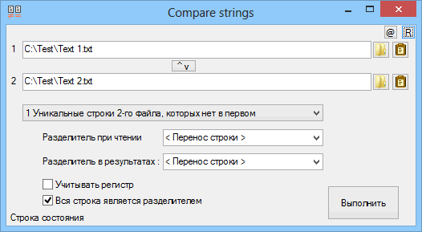

AutoIt3
Compare_strings
Назначение
Сравнение двух файлов по строкам.

Взаимосвязанные
Compare_strings| Файл 1 | Файл 2 | Результат |
|---|---|---|
| Крупа | Орахис | Орахис |
| Рис | Соль | |
| Сахар | Соль | |
| Гречка |
| Файл 1 | Файл 2 | Результат |
|---|---|---|
| Крупа | Крупа | |
| Рис | Сахар | Сахар |
| Сахар | ||
| Гречка | Крупа |
| Файл 1 | Результат |
|---|---|
| Крупа | Крупа |
| Рис | Рис |
| Сахар | |
| Сахар | Гречка |
| Гречка | |
| Файл 1 | Результат |
|---|---|
| Крупа | 3 Крупа |
| Рис | 1 Рис |
| 2 Сахар | |
| Сахар | 1 Гречка |
| Гречка | |
Этот режим по умолчанию. Строки обрабатываются как обычно, каждая строка является элементом сравнения.
В этом режиме элементом является слово. Разделителем элементов является пробел, табуляция, перенос строки. Например, можно узнать сколько раз повторяется каждое слово в тексте.
Этот выбор позволяет обрабатывать иные списки. Например, в строке "сахар|гречка|крупа|рис|соль" разделителем является символ вертикальная черта "|".
Устанавливает разделитель в выходных данных, то есть разделитель между элементами.
По умолчанию регистр не учитывается, это полезно для обработки списка файлов. При установки галочки регистр учитывается так как в этом случае сравнение происходит в бинарном режиме.
Данные для обработки можно получить, открыв файлы или из буфера обмена. Кнопка между полями ввода позволяет поменять списки местами, чтобы выполнить противоположное сравнение. Результат операции всегда открывается в блокноте. Каждая операция создаёт новый файл в папке TEMP. При закрытии программы вы можете удалить все результаты сравнения.